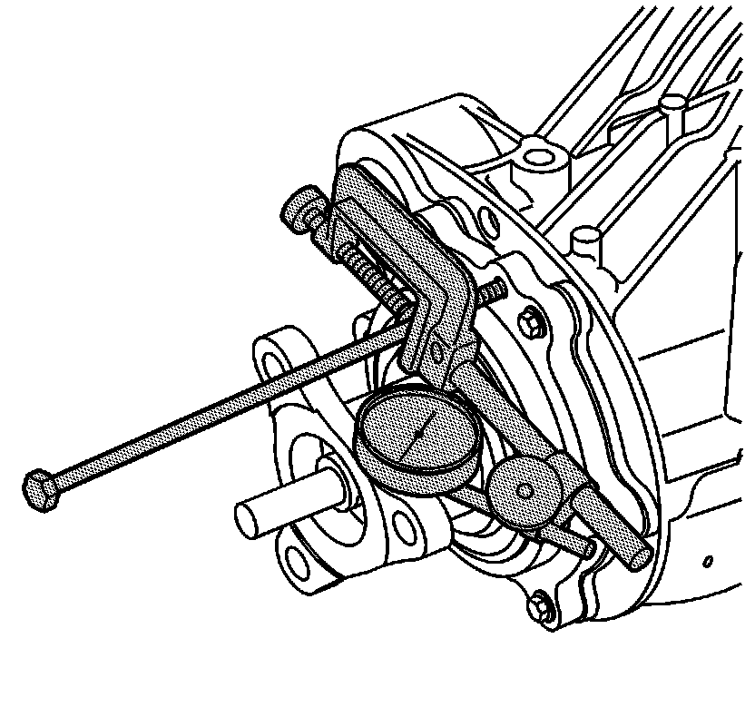
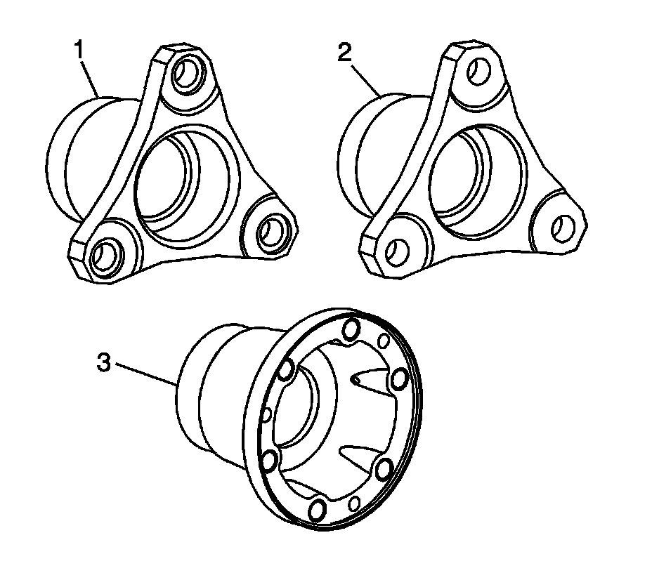

Backlash Adjustment
Backlash Adjustment
Tools Required
* J 45019 Flange and Pinion Cage Remover
* J 8001 Dial Indicator Set

1. Remove 1 pinion cage bolt and install a long bolt from J 45019 .
2. Install J 8001 as shown in order to check backlash. Position the tip of the dial indicator above the center line of the flange bolt holes.

3. Check the axle ratio on the axle tag. Refer to Rear Axle Usage (Rear Axle Usage) .
4. Determine which flange is used. The 105 mm flange (1) is used with ratios 2.73, 3.23 and 3.42. The 96 mm flange (2) is used with ratios 3.42, 3.23 and 3.91. The 86 mm flange (3) is used with ratio 3.73.
5. For backlash specification, refer to Rear Axle Specifications (Rear Axle Specifications) .